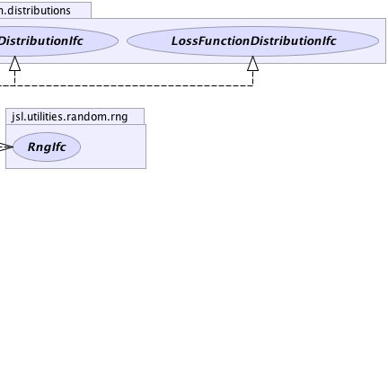

jsl.utilities.random.AbstractRandom
jsl.utilities.random.distributions.Distribution
jsl.utilities.random.distributions.Poisson
jsl.utilities.random.AbstractRandom
jsl.utilities.random.distributions.Distribution
jsl.utilities.random.distributions.Poisson
|
||||||||||
| PREV CLASS NEXT CLASS | FRAMES NO FRAMES | |||||||||
| SUMMARY: NESTED | FIELD | CONSTR | METHOD | DETAIL: FIELD | CONSTR | METHOD | |||||||||
java.lang.Object
public class Poisson
Represents a Poisson random variable. A Poisson random variable represents the number of occurrences of an event with time or space.
|  | |
 |
| Nested Class Summary |
|---|
| Nested classes/interfaces inherited from class jsl.utilities.random.AbstractRandom |
|---|
AbstractRandom.RandomControls |
| Field Summary | |
|---|---|
static int |
DEFAULT_MAX_ITERATIONS
Used in the calculation of the incomplete gamma function |
private double |
myMean
the mean (parameter) of the poisson |
private boolean |
myRecursiveAlgoFlag
indicates whether or not pmf and cdf calculations are done by recursive (iterative) algorithm based on logarithms or via beta incomplete function and binomial coefficients. |
| Fields inherited from class jsl.utilities.random.distributions.Distribution |
|---|
myRNG |
| Fields inherited from class jsl.utilities.random.AbstractRandom |
|---|
myId, myName |
| Constructor Summary | |
|---|---|
Poisson()
Constructs a Poisson with mean rate parameter 1.0 |
|
Poisson(double mean)
Constructs a Poisson using the supplied parameter |
|
Poisson(double[] parameters)
Constructs a Poisson using the supplied parameter |
|
Poisson(double[] parameters,
RngIfc rng)
Constructs a Poisson using the supplied parameter |
|
Poisson(double mean,
RngIfc rng)
Constructs a Poisson using the supplied parameter |
|
| Method Summary | |
|---|---|
double |
cdf(double x)
Returns the F(x) = Pr{X <= x} where F represents the cumulative distribution function |
double |
cdf(int x)
|
double |
firstOrderLossFunction(double x)
Computes the first order loss function for the distribution function for given value of x, G1(x) = E[max(X-x,0)] |
double |
getMean()
Returns the mean or expected value of a distribution |
int |
getMode()
|
double[] |
getParameters()
Gets the parameters for the distribution |
double |
getVariance()
Returns the variance of the distribution if defined |
double |
invCDF(double prob)
Computes the inverse of the cumulative probability distribution function for the supplied probability throws IllegalArgumentException when probability is outside the range [0,1] p = 0.0 returns 0.0 p = 1.0 returns Double.POSITIVE_INFINITY |
protected static int |
invCDFViaNormalApprox(double p,
double mean)
|
Poisson |
newAntitheticInstance()
Returns a new instance that will supply values based on antithetic U(0,1) when compared to this distribution |
Poisson |
newInstance()
Returns a new instance of the random source with the same parameters but an independent generator |
Poisson |
newInstance(RngIfc rng)
Returns a new instance of the random source with the same parameters with the supplied RngIfc |
double |
pmf(double x)
If x is not and integer value, then the probability must be zero otherwise pmf(int x) is used to determine the probability |
double |
pmf(int x)
|
static double |
poissonCCDF(int j,
double mean)
Allows static computation of complementary cdf function assumes that distribution's range is {0,1, ...} |
static double |
poissonCCDF(int j,
double mean,
boolean recursive)
Allows static computation of complementary cdf function assumes that distribution's range is {0,1, ...} |
static double |
poissonCDF(int j,
double mean)
Allows static computation of cdf assumes that distribution's range is {0,1, ...} |
static double |
poissonCDF(int j,
double mean,
boolean recursive)
Allows static computation of cdf assumes that distribution's range is {0,1, ...} |
static int |
poissonInvCDF(double p,
double mean)
Returns the quantile associated with the supplied probablity, x assumes that distribution's range is {0,1, ...} |
static int |
poissonInvCDF(double p,
double mean,
boolean recursive)
Returns the quantile associated with the supplied probablity, x assumes that distribution's range is {0,1, ...} |
static double |
poissonLF1(double x,
double mean,
boolean recursive)
Computes the first order loss function for the distribution function for given value of x, G1(x) = E[max(X-x,0)] |
static double |
poissonLF2(double x,
double mean,
boolean recursive)
Computes the 2nd order loss function for the distribution function for given value of x, G2(x) = (1/2)E[max(X-x,0)*max(X-x-1,0)] |
static double |
poissonPMF(int j,
double mean)
Allows static computation of prob mass function assumes that distribution's range is {0,1, ...} |
static double |
poissonPMF(int j,
double mean,
boolean recursive)
Allows static computation of prob mass function assumes that distribution's range is {0,1, ...} |
static double |
recursiveCDF(int j,
double mean)
Computes the cdf at j using a recursive (iterative) algorithm using logarithms |
static double |
recursivePMF(int j,
double mean)
Computes the probability mass function at j using a recursive (iterative) algorithm using logarithms |
protected static int |
searchDownCDF(double p,
double mean,
int start,
double cdfAtStart,
boolean recursive)
|
protected static int |
searchUpCDF(double p,
double mean,
int start,
double cdfAtStart,
boolean recursive)
|
double |
secondOrderLossFunction(double x)
Computes the 2nd order loss function for the distribution function for given value of x, G2(x) = (1/2)E[max(X-x,0)*max(X-x-1,0)] |
void |
setMean(double mean)
Sets the mean of the Poisson distribution |
void |
setParameters(double[] parameters)
Sets the parameters for the distribution parameters[0] should be the mean rate |
| Methods inherited from class jsl.utilities.random.distributions.Distribution |
|---|
advanceToNextSubstream, cdf, complementaryCDF, getAntitheticOption, getAntitheticValue, getRandomNumberGenerator, getStandardDeviation, getValue, inverseContinuousCDFViaBisection, inverseContinuousCDFViaBisection, inverseDiscreteCDFViaSearchUp, resetStartStream, resetStartSubstream, setAntitheticOption, setRandomNumberGenerator, toString |
| Methods inherited from class jsl.utilities.random.AbstractRandom |
|---|
getId, getName, getSample, getSample, makeControls, setControls, setId, setName |
| Methods inherited from class java.lang.Object |
|---|
clone, equals, finalize, getClass, hashCode, notify, notifyAll, wait, wait, wait |
| Methods inherited from interface jsl.utilities.random.distributions.CDFIfc |
|---|
cdf, complementaryCDF |
| Methods inherited from interface jsl.utilities.random.distributions.VarianceIfc |
|---|
getStandardDeviation |
| Methods inherited from interface jsl.utilities.random.SampleIfc |
|---|
getSample, getSample |
| Field Detail |
|---|
public static final int DEFAULT_MAX_ITERATIONS
private boolean myRecursiveAlgoFlag
private double myMean
| Constructor Detail |
|---|
public Poisson()
public Poisson(double[] parameters)
parameters - A array that holds the parameters, parameters[0] should be the mean rate
public Poisson(double[] parameters,
RngIfc rng)
parameters - A array that holds the parameters, parameters[0] should be the mean raterng - public Poisson(double mean)
mean - the mean rate
public Poisson(double mean,
RngIfc rng)
mean - the mean raterng - A RngIfc| Method Detail |
|---|
public final Poisson newInstance()
newInstance in interface NewInstanceIfcnewInstance in interface RandomIfcnewInstance in class Distributionpublic final Poisson newInstance(RngIfc rng)
newInstance in interface RandomIfcnewInstance in class Distributionrng -
public final Poisson newAntitheticInstance()
newAntitheticInstance in class Distributionpublic final double getMean()
MeanIfc
getMean in interface MeanIfcpublic final double getVariance()
VarianceIfc
getVariance in interface VarianceIfcpublic final void setMean(double mean)
mean - the mean rate, mean must be > 0public final int getMode()
public final double cdf(int x)
public final double cdf(double x)
CDFIfc
cdf in interface CDFIfcx - a double representing the upper limit
public final double firstOrderLossFunction(double x)
firstOrderLossFunction in interface FirstOrderLossFunctionIfcx - The value to be evaluated
public final double secondOrderLossFunction(double x)
secondOrderLossFunction in interface SecondOrderLossFunctionIfcx - The value to be evaluated
public final double invCDF(double prob)
invCDF in interface CDFIfcprob - The probability to be evaluated for the inverse, must be in range [0,1],
public final double pmf(int x)
public final double pmf(double x)
pmf in interface PMFIfcx -
public final void setParameters(double[] parameters)
setParameters in interface ParametersIfcparameters - an array of doubles representing the parameters for
the distributionpublic final double[] getParameters()
getParameters in interface ParametersIfc
public static double recursivePMF(int j,
double mean)
j - mean -
public static double recursiveCDF(int j,
double mean)
j - mean -
public static double poissonPMF(int j,
double mean)
j - value for which prob is neededmean -
public static double poissonPMF(int j,
double mean,
boolean recursive)
j - value for which prob is neededmean - recursive - true indicates that the recursive logarithmic algorithm should be used
public static double poissonCDF(int j,
double mean)
j - value for which prob is neededmean -
public static double poissonCDF(int j,
double mean,
boolean recursive)
j - value for which prob is neededmean - recursive - true indicates that the recursive logarithmic algorithm should be used
public static double poissonCCDF(int j,
double mean)
j - value for which ccdf is neededmean -
public static double poissonCCDF(int j,
double mean,
boolean recursive)
j - value for which ccdf is neededmean - recursive - true indicates that the recursive logarithmic algorithm should be used
public static double poissonLF1(double x,
double mean,
boolean recursive)
x - The value to be evaluatedmean - recursive -
public static double poissonLF2(double x,
double mean,
boolean recursive)
x - The value to be evaluatedmean - recursive -
public static int poissonInvCDF(double p,
double mean)
p - The probability that the quantile is needed formean -
public static int poissonInvCDF(double p,
double mean,
boolean recursive)
p - The probability that the quantile is needed formean - recursive - true indicates that the recursive logarithmic algorithm should be used
protected static int searchUpCDF(double p,
double mean,
int start,
double cdfAtStart,
boolean recursive)
p - mean - start - cdfAtStart - recursive -
protected static int searchDownCDF(double p,
double mean,
int start,
double cdfAtStart,
boolean recursive)
p - mean - start - cdfAtStart - recursive -
protected static int invCDFViaNormalApprox(double p,
double mean)
p - mean -
|
||||||||||
| PREV CLASS NEXT CLASS | FRAMES NO FRAMES | |||||||||
| SUMMARY: NESTED | FIELD | CONSTR | METHOD | DETAIL: FIELD | CONSTR | METHOD | |||||||||